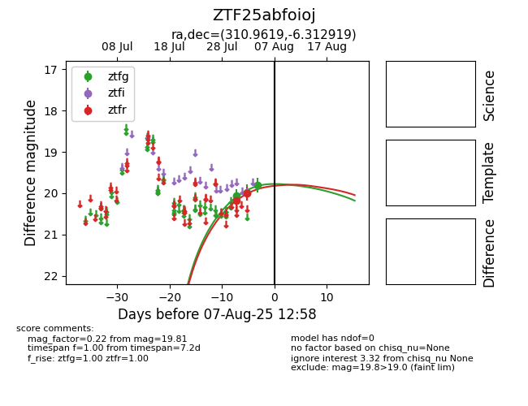

Target ZTF25abfoioj at 2025-08-07 16:21, see:
FINK: fink-portal.org/ZTF25abfoioj
Lasair: lasair-ztf.lsst.ac.uk/objects/ZTF25abfoioj
ALeRCE: alerce.online/object/ZTF25abfoioj
alt names
ZTF25abfoioj (ztf,fink)
coordinates:
equatorial (ra, dec) = (310.9619,-6.31292)
galactic (l, b) = (40.4447,-27.82839)
photometry
last ztfg=19.81, ztfr=20.01
3 ztfg, 2 ztfr detections
